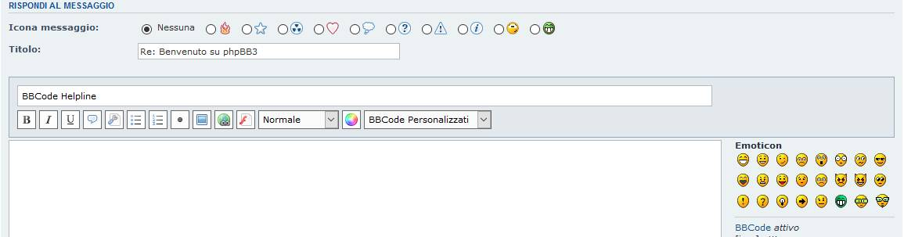
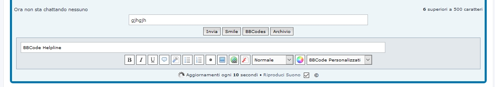

Extension Version: 1.2.0

on mChat extension

Description: Turn normal bbcode button into graphical silk buttons. The Extension also provide to group custom bbcodes into selectbox for a better choise. Last but not least an helpline input show the bbcode help message on hover. It's a cosmetic ext with zero impact on databse.
Inspired from the original Idea build by Stoker Mod.
Author: Sir Xiradorn
Original Author:
Requirements:
Repository: X-BBcode Silk Buttons - https://github.com/XiradornLab/phpbb_xbbcodesilkbtn
Release Download: X-BBcode Silk Buttons - https://github.com/XiradornLab/phpbb_xbbcodesilkbtn/releases
Features:
Installation:
xbbcodesilkbtn.ext directory of your phpBB board, create a new directory named xiradorn (if it does not already exist).xbbcodesilkbtn folder to /ext/xiradorn/ (if done correctly, you'll have the main extension class at (your forum root)/ext/xiradorn/xbbcodesilkbtn/composer.json).Customise -> Manage extensions.X-BBcode Silk Buttons under the Disabled Extensions list, and click its Enable link.[/list]Update Instructions:
Style Support:
Currently it perfectly work on prosilver. Other style will be probably added in future.
Permissions:
Works with normal bbcode permission
Thank you so much for all your suggestions.